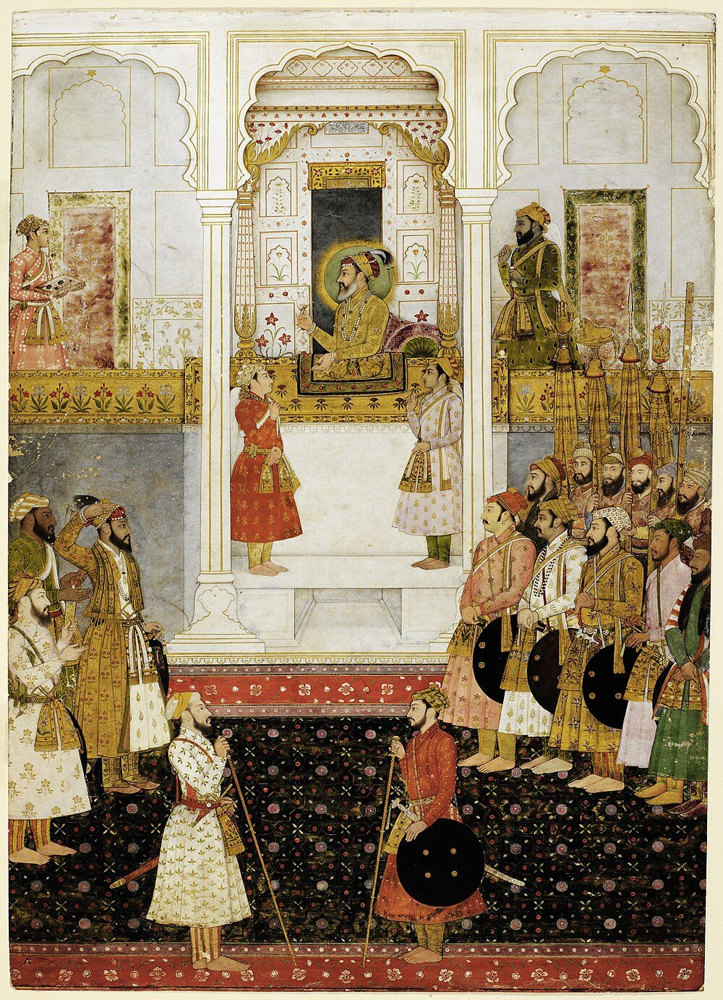
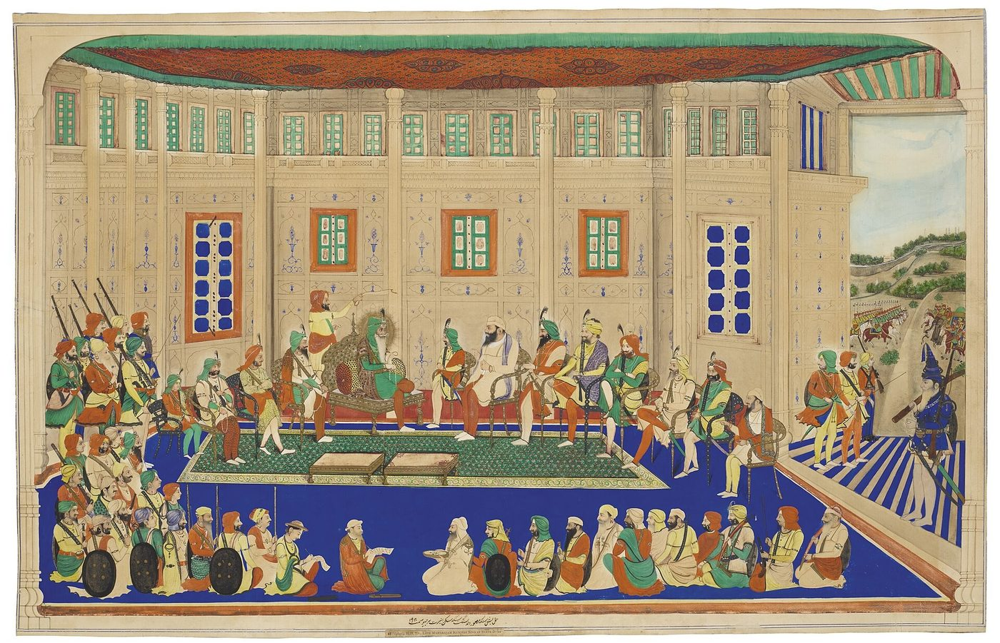

Chapter 18: Sharīʿa, Siyāsa and Sovereignty: Islamic Law and the Indo-Persian State, c. 1200–1800¶
The Dharmaśāstras were never the only law in India, and for most of the second millennium CE they were not the law of the state. From the thirteenth century much of northern India, and later much of the Deccan, was ruled by Muslim dynasties whose courts administered Islamic law (sharīʿa) through judges (qāḍīs), alongside royal regulations and the customary law of the communities they governed. This chapter describes that legal and political order on its own terms, as one of the major traditions of law and statecraft in Indian history, and not merely as the prelude to the colonial “Muhammadan law” described in Chapter 19. It sets out the jurists’ method and the law books used in India; the law of crime and its relation to the ruler’s discretionary justice; the courts and officials of the Delhi Sultanate and the Mughal empire, and what their surviving documents show of the law in use; the Persian literature of ethics and statecraft; endowments and revenue grants; the continued life of Dharmaśāstra under Muslim rule; the different legal worlds of the Deccan, the Malabar coast and Awadh; and the Maratha and Sikh states that succeeded Mughal power. The economic institutions of these states — the iqṭāʿ, the manṣab and jāgīr, the land revenue and the regulation of markets — are treated in Volume 19 of this series and are mentioned here only where they bear on law and government.
Two cautions apply throughout. First, as with Dharmaśāstra, the books of the jurists describe how the law ought to be; how far it was followed has to be established from documents and chronicles, not assumed. Second, the chronicles that describe the sultans and emperors were written by courtiers and partisans with purposes of their own, and their accounts of piety, tolerance or persecution need the same critical reading as the praise-poems of Hindu kings (Chapter 17) (Alam 2004; Hasan 2004).
18.1 Sharīʿa and Fiqh¶
Islamic law is understood by Muslim jurists as the effort to know and apply the sharīʿa, the divinely ordained “way”. The human science of understanding it is fiqh, jurisprudence, developed from the eighth century onwards by scholars who drew rules from the Qurʾān, from the reported practice (sunna) of the Prophet Muḥammad as recorded in ḥadīth reports, from the consensus of scholars (ijmāʿ) and from analogical reasoning (qiyās). By the tenth century, Sunni jurisprudence had crystallised into four schools (madhhab): the Ḥanafī, Mālikī, Shāfiʿī and Ḥanbalī. Shīʿī Muslims followed their own jurisprudence, of which the Ithnā ʿasharī (Twelver) school was the most important in India (Hallaq 2009).
Like Dharmaśāstra, fiqh was a scholarly tradition, developed and transmitted by experts (the ʿulamāʾ), which covered ritual as well as law. Its substantive law dealt with worship, marriage, divorce, inheritance, contracts, property, endowments (waqf), crimes and the conduct of judges. Its practitioners included the qāḍī, a judge appointed by the ruler, and the muftī, a jurisconsult who issued opinions (fatwā) on questions of law. Wael Hallaq has emphasised that pre-modern Islamic law was a jurists’ law, not state legislation, and that rulers generally supported rather than made it (Hallaq 2009). Most Muslims in the Indian subcontinent followed the Ḥanafī school, which had been dominant in Central Asia and the eastern Islamic lands from which the ruling elites came; the main exception was the western coast, where Muslim communities formed through the Indian Ocean trade, such as the Māppiḷas of Malabar, followed the Shāfiʿī school.
18.1.1 The Jurists’ Method and the Ḥanafī Books¶
The discipline that explained how rules were derived from the sources was called uṣūl al-fiqh, “the roots of jurisprudence”. It dealt with the authority of the Qurʾān and the ḥadīth, the kinds of command and prohibition, the interpretation of general and particular expressions, abrogation, consensus and analogy — questions close to those that Mīmāṃsā posed for the Veda and that the Dharmaśāstra commentators borrowed from it (Chapter 9). A jurist qualified to derive rules directly from the sources was a mujtahid, and his reasoning was ijtihād. Most later jurists practised taqlīd, adherence to the established doctrine of their school, while still exercising considerable judgement in choosing among its opinions and applying them to new cases (Hallaq 2009).
The Ḥanafī school traced its doctrine to Abū Ḥanīfa (d. 767) of Kufa and to his two leading pupils: Abū Yūsuf (d. 798), who served as chief qāḍī at Baghdad and wrote a treatise on land tax and public finance for the caliph Hārūn al-Rashīd, and Muḥammad al-Shaybānī (d. 805), whose books became the foundation texts of the school. Where the three disagreed, later Ḥanafīs worked out rules of preference, so that the doctrine of the school was in effect a structured field of authoritative opinions rather than a single code. In India it was learned through a chain of handbooks and commentaries composed in Central Asia and the Middle East: the Mukhtaṣar of al-Qudūrī (d. 1037); the Hidāya (“Guidance”) of Burhān al-Dīn al-Marghīnānī (d. 1197), a commentary on his own digest that gives the reasons for each rule and records the divergent views; the Kanz al-daqāʾiq of Abu’l-Barakāt al-Nasafī (d. 1310); and the Sharḥ al-Wiqāya of Ṣadr al-Sharīʿa (d. 1347). The Hidāya was for centuries the most studied law book in Indian madrasas, which is why the East India Company had it translated (Chapter 19).
Indian scholars added works of their own. Muḥibb Allāh Bihārī (d. 1707), who served as a qāḍī under Aurangzeb, wrote the Musallam al-thubūt, a treatise on legal theory that was studied well beyond India, and Aurangzeb’s teacher Mullā Jīwan (d. 1718) wrote the Nūr al-anwār, a commentary on al-Nasafī’s handbook of legal theory, the Manār. In the eighteenth century the curriculum associated with Mullā Niẓām al-Dīn (d. 1748) of Farangī Maḥall in Lucknow, the Dars-i Niẓāmī, taught law through the Sharḥ al-Wiqāya and the Hidāya and legal theory through these Indian and earlier works, alongside a heavy course of logic and philosophy. It became the standard syllabus of South Asian madrasas and trained many of the qāḍīs and muftīs of the successor states (Robinson 2001). Volume 24 of this series discusses the intellectual history of this curriculum.
The distinction between the muftī and the qāḍī shaped the working of the law. A fatwā was an opinion on a point of law, given in answer to a question by a scholar recognised as competent; it bound no one, and a questioner who disliked one answer could seek another. A qāḍī’s judgement (qaḍāʾ) was binding on the parties and was enforced by the ruler’s officers. A qāḍī was expected to consult muftīs on difficult questions, and in Mughal India muftīs were attached to the qāḍīs’ courts for the purpose. The relationship resembles that between a paṇḍit’s written opinion (vyavasthā) and the decision of a king’s court or a Brahmin assembly in the Dharmaśāstra tradition (Chapter 9), though the Islamic institutions were more formally organised.
18.1.2 Fatwā Collections Made in India¶
Indian jurists also compiled large collections of rulings for the use of judges and muftīs. The Fatāwā-yi Tātārkhāniyya, compiled in Arabic in the reign of Fīrūz Shāh Tughluq (r. 1351–1388) by ʿĀlim b. ʿAlāʾ and named after the noble Tātār Khān who sponsored it, gathered the rulings of earlier Ḥanafī authorities under topical headings; Mughal and Ottoman jurists alike later drew on it. A Persian compilation of the same reign, the Fiqh-i Fīrūzshāhī, made the law accessible to readers who did not command Arabic. The greatest of these collections, the Fatāwā-i ʿĀlamgīrī, is discussed below. None of these works was legislation: they selected and arranged the authoritative opinions of the school, and their value lay in sparing the judge a search through many books. The use of Arabic for the jurists’ compilations and of Persian for administrative and political writing reflects a division of labour within the Muslim learned elite that lasted until the nineteenth century.
18.1.3 Family Law and Endowments in Fiqh¶
The parts of Islamic law that most affected daily life, and that later formed “Muslim personal law” in India, concerned marriage, divorce, inheritance and endowments. Marriage in fiqh is a contract between the husband and the bride (represented, in the Ḥanafī school, by her guardian if she is a minor), which requires the husband to pay a marriage gift (mahr) that belongs to the wife. The husband may dissolve the marriage by repudiation (ṭalāq); a wife may obtain a divorce by agreement (khulʿ), usually by returning the mahr, or, in limited circumstances, by a judicial decree. Polygyny of up to four wives is permitted. The law of inheritance, derived from the Qurʾān, assigns fixed shares to a wide range of relatives, including daughters, wives, mothers and sisters; a daughter generally receives half the share of a son. Endowments (waqf) allowed property to be dedicated in perpetuity for religious or charitable purposes, or for the benefit of the founder’s descendants, and supported mosques, schools, Sufi lodges and families (Hallaq 2009).
These rules gave women property rights that in some respects exceeded those of the Dharmaśāstras — notably fixed shares of inheritance and ownership of the mahr — while maintaining the husband’s unilateral right of divorce and a lesser share for daughters. In practice, as historians have shown, many Muslim communities in India followed customs that departed from fiqh, especially in excluding women from inheriting agricultural land; the Shariat Application Act of 1937 was intended to bring Muslims under the textual law in personal matters (Chapter 19).
18.2 Crime and Punishment: Ḥadd, Qiṣāṣ and Taʿzīr¶
Islamic criminal law, as the jurists set it out, was not a single penal code but three distinct bodies of rules. The first comprised the ḥudūd (singular ḥadd, “limit”), offences whose penalties the jurists held to be fixed by the Qurʾān or the Prophet’s practice as “claims of God”: unlawful intercourse (zinā), a false accusation of it (qadhf), theft (sariqa), drinking wine and highway robbery; whether apostasy and rebellion belonged to the group was debated. The penalties — amputation for theft, flogging or stoning for zinā, flogging for false accusation and for drinking — were severe, but the law of proof made them hard to apply. Zinā required four adult male Muslim eyewitnesses to the act itself, or a confession, which could be retracted; theft required that the property be taken by stealth from a place of safekeeping and exceed a minimum value; and the jurists held, on the strength of a ḥadīth, that a ḥadd penalty was to be averted by any doubt (shubha). The Ḥanafī school, dominant in India, was particularly ready to find such doubts.
The second body of rules concerned homicide and bodily injury, which the jurists treated in the first instance as wrongs against the victim and his family. For intentional killing or wounding, the victim or his heirs could demand retaliation in kind (qiṣāṣ), accept compensation (diya, “blood-money”) or pardon the offender; for accidental killing compensation was owed, often by the offender’s kin group. The state’s role was to adjudicate the claim and to carry out retaliation if it was demanded. The third body was taʿzīr, discretionary punishment for offences that had no fixed penalty or could not be proved to the ḥadd standard. It was left to the judgement of the qāḍī or the ruler. The Ḥanafīs held that taʿzīr should fall short of the lightest ḥadd, but they also recognised a wider power of the ruler to punish in the public interest by way of siyāsa, extending in the case of habitual criminals to death.
In practice it was this discretionary jurisdiction, exercised by governors, military commanders and city police chiefs rather than by qāḍīs, that carried most of the burden of criminal justice in the Sultanate and Mughal states. Chronicles record punishments far harsher than the jurists’ law would have allowed, and also rulers who boasted of restraint. Fīrūz Shāh Tughluq declared in his short memoir, the Futūḥāt-i Fīrūzshāhī, that he had abolished the mutilations and tortures used under his predecessors, such as the cutting off of hands, feet, ears and noses; the emperor Jahāngīr forbade the cutting off of noses and ears among the first ordinances of his reign (Section 18.5.5). The East India Company’s courts in Bengal inherited this system. They found the jurists’ rules of proof too lenient, the heirs’ power to pardon a murderer offensive and the officials’ discretion too arbitrary, and they reformed all three by regulation before replacing the whole with the Penal Code (Chapter 19) (Singha 1998). The Dharmaśāstras’ treatment of crime (Chapter 14) also combines a scholarly law of offences and proof with a broad royal power of punishment; the most striking difference is fiqh’s treatment of homicide as, in the first instance, a claim belonging to the victim’s family.
18.3 The Delhi Sultanate¶
18.3.1 Courts and Officials¶
Arab rule in Sind from the early eighth century had brought Islamic law to a limited area. The Ghaznavid and Ghurid conquests of the eleventh and twelfth centuries, and the establishment of the Delhi Sultanate in 1206, made it the law of a major north Indian state. The sultans appointed a chief qāḍī at the capital and qāḍīs in provincial towns; muftīs advised them; and a muḥtasib supervised markets and public morals. Criminal justice, much of it in practice, was administered by military and police officers — the governors of provinces and districts and the city police chief (kotwāl) — under the ruler’s authority.
18.3.2 Sharīʿa and the Ruler’s Law¶
The sultans did not rule by sharīʿa alone. Islamic political thought recognised the ruler’s authority to make regulations in the public interest (siyāsa) where the jurists’ law was silent or impractical. The historian and political writer Ziyāʾ al-Dīn Baranī (c. 1285–1357), in his Fatāwā-yi Jahāndārī (“Rulings on World-Rule”), argued that a Muslim ruler must govern by zawābiṭ — state regulations made by the ruler for the welfare of the realm — as well as by the sharīʿa, provided that these did not contradict it. Muzaffar Alam has shown how this distinction, together with a Persian tradition of ethical and political writing (akhlāq) that emphasised justice to all subjects, shaped the political ideas of Indian Muslim rulers (Alam 2004). The jurists of the period also compiled collections of rulings (Section 18.1.2).
18.3.3 Sultans, Qāḍīs and the Limits of Sharīʿa¶
The tension between the jurists’ law and the ruler’s will is dramatised in Baranī’s history of the Delhi sultans, the Tārīkh-i Fīrūzshāhī (1357). Baranī describes ʿAlāʾ al-Dīn Khaljī (r. 1296–1316) questioning the qāḍī Mughīth al-Dīn of Bayāna about the lawfulness of his punishments and exactions, and answering the qāḍī that he gave whatever orders he judged good for the state, without asking whether they were lawful. The scene is a literary set piece with a moral, for Baranī approved neither of the sultan’s disregard of the jurists nor of the jurists’ compliance; but it states plainly the problem that his Fatāwā-yi Jahāndārī tried to solve by distinguishing the sharīʿa from the ruler’s regulations. The same sultan’s controls over prices and markets in Delhi, enforced by severe penalties on traders who cheated, are among the best-documented economic regulations of any pre-modern Indian state (Volume 19 of this series).
Muḥammad b. Tughluq (r. 1325–1351) appointed the Moroccan traveller Ibn Baṭṭūṭa, a jurist of the Mālikī school, as a qāḍī at Delhi. Ibn Baṭṭūṭa’s account of the sultan combines descriptions of terrible punishments with stories of the sultan’s submission to his own courts, including one in which he appeared before the qāḍī to answer a complaint and accepted judgement against himself. Such stories were told to show that the ruler stood under the law; the punishments recorded beside them show how far siyāsa could depart from the jurists’ limits. His successor Fīrūz Shāh Tughluq (r. 1351–1388) presented himself, by contrast, as a ruler who governed by the sharīʿa: besides renouncing mutilation, he claims in his memoir to have abolished taxes that the law did not sanction, to have repaired mosques and restored endowments, and to have punished sects he regarded as heretical. His chronicler Shams Sirāj ʿAfīf records that he extended the jizya to Brahmins, who had previously been exempt — a reminder that a ruler’s piety towards one law could mean harsher treatment of subjects outside it (Jackson 1999).
18.3.4 Slaves and Sovereigns¶
Islamic law recognised slavery. Slaves could be acquired by capture in war against non-Muslims, by purchase or by birth to a slave mother; they had defined rights and disabilities, and the law encouraged their manumission as a pious act. In the early Delhi Sultanate a particular form of military slavery shaped the state itself. Many of the leading commanders were Turkish slaves (bandagān) bought young in Central Asia, trained in arms and administration and bound to their master by personal loyalty. Three of the early sultans — Quṭb al-Dīn Aybak, Iltutmish and Balban — had begun their careers as slaves, which is why modern historians long called the first rulers of Delhi the “Slave dynasty”, although they were freed men and belonged to three different lines. Slave status was here a source of trust rather than of degradation: a slave had no lineage or local base of his own, and his advancement depended entirely on his master. Peter Jackson has shown how this institution, brought from the eastern Islamic world, gave the early sultans a loyal military elite and also fuelled the struggles among slave-officers that followed the death of each sultan (Jackson 1999).
Slavery of a humbler kind was widespread. Campaigns into Hindu territory produced captives who were sold in the markets of Delhi and beyond. ʿAfīf reports that Fīrūz Shāh Tughluq gathered a very large number of slaves — his figure is 180,000 — whom he employed in workshops and in his household and had trained in crafts and learning. Hindu law also recognised several kinds of slave (Chapter 13), and the deeds of the Lekhapaddhati show women being sold in Hindu-ruled Gujarat in the same centuries (Chapter 17). Neither tradition questioned slavery as such; both regulated it, and the colonial abolition of its legal status in 1843 overrode both (Chapter 13).
18.3.5 Non-Muslim Subjects¶
Under Islamic law, non-Muslims living under Muslim rule could be recognised as protected people (dhimmī), who paid a poll-tax (jizya) and in return enjoyed protection of life and property and the right to practise their religion. Jurists debated whether Hindus could be treated as dhimmīs, since the classical category referred to “people of the book”; Indian rulers in practice treated them as such. Hindus, Jains and others continued, for the most part, to regulate their family and community affairs through their own institutions — caste councils, village assemblies, Brahmin experts in Dharmaśāstra and the courts of Hindu chiefs — and the Dharmaśāstric digests of the period (Chapter 9) were composed in this world. At the same time, non-Muslims could and did approach qāḍīs’ courts, especially to register and enforce transactions, so that the boundaries between legal communities were less rigid than they later became.
18.4 Persian Political Thought¶
The Muslim rulers of India brought with them a second tradition of political thought, written mainly in Persian. Its genres included “mirrors for princes” — books of advice to rulers — and works of practical ethics (akhlāq) derived from Greek philosophy through Arabic and Persian intermediaries, of which Naṣīr al-Dīn Ṭūsī’s Akhlāq-i Nāṣirī (13th century) was the most influential in India. A recurring idea of this literature is the “circle of justice”: there is no kingdom without an army, no army without wealth, no wealth without a prosperous peasantry, and no prosperity without justice — so that the ruler’s power depends, in the end, on just treatment of his subjects. Muzaffar Alam has shown how Mughal ideologues drew on this tradition to articulate an ideal of rule that emphasised justice to all subjects, Muslim and non-Muslim, and the ruler’s role in maintaining balance among the different groups of society (Alam 2004).
Readers of the preceding chapters will notice parallels with the saptāṅga theory and with rājadharma: the dependence of power on revenue, of revenue on cultivators, and of the whole on the king’s justice. The parallels reflect common problems of agrarian monarchies rather than borrowing. They also help to explain why Hindu and Muslim courtly elites in the Mughal period could share a political vocabulary, and why Sanskrit and Persian works on polity were translated into each other’s languages.
18.4.1 Ethics, Ranks and the Just King¶
The akhlāq literature placed politics within a philosophical account of human perfection. Following the Greek division of practical philosophy, Ṭūsī’s Akhlāq-i Nāṣirī (1235) treats in turn the ethics of the individual, the management of the household (tadbīr-i manzil) and the government of cities and kingdoms (siyāsat-i mudun). Its political part argues that human beings need one another’s help and therefore need a ruler who keeps each group in its place and maintains a just balance among them. Jalāl al-Dīn Davānī’s Akhlāq-i Jalālī (late fifteenth century), a reworking of Ṭūsī, was as widely read in India. Both works divide society into four ranks — men of the pen, men of the sword, merchants and artisans, and cultivators — and compare them to the four elements, which must be present in due proportion for a body to be healthy; Abu’l Faẓl adapted the same scheme in his account of Akbar’s government. The resemblance to the varṇa scheme, which also assigns society four orders, did not escape Indian readers, but the akhlāq ranks were occupational categories, not birth-groups defined by ritual purity (Alam 2004).
Not every Persian writer shared this inclusive emphasis. Baranī’s Fatāwā-yi Jahāndārī urges the ruler to reserve office and learning for the well-born and to keep the low-born from both, and it speaks of Hindus with open hostility; historians read it as the ideal of a disappointed courtier rather than as a description of any sultan’s practice (Alam 2004). In Kashmir, the Sufi Mīr Sayyid ʿAlī Hamadānī (d. 1384), who came from Iran in the later fourteenth century, wrote a mirror for princes, the Dhakhīrat al-mulūk, which set out the restrictive conditions that the classical jurists had laid down for non-Muslim subjects. Kashmiri rulers moved between these poles. The Sanskrit chronicles of Jonarāja and Śrīvara, continuing Kalhaṇa’s history (Chapter 17), describe the persecution of Brahmins under Sultān Sikandar (r. c. 1389–1413) and the restoration of their position under Zayn al-ʿĀbidīn (r. 1420–1470), whom they praise as a just king in the language of rājadharma. That Sanskrit court historians should judge a sultan by the standards of the śāstras is itself evidence of the shared political vocabulary noted above.
18.5 The Mughal Empire¶
18.5.1 Administration¶
The Mughal empire (from 1526; at its height from the later sixteenth to the early eighteenth century) developed one of the most elaborate administrative systems of the pre-modern world. Its nobility was organised in the manṣabdārī system, under which each officer held a rank (manṣab) defining his status, pay and the number of horsemen he was to maintain; most were paid by the assignment of land revenue (jāgīr). Under Akbar (r. 1556–1605), the revenue minister Todar Mal developed the zabt system, in which land revenue was assessed in cash on the basis of measured land and average yields and prices, culminating in the ten-year (dahsāla) assessment of 1580. The imperial ideology, the organisation of the provinces and the statistics of the empire were recorded by Akbar’s minister Abu’l Faẓl in the Āʾīn-i Akbarī (1590s) (Richards 1993; Habib 1963); Volume 19 of this series describes the revenue system and the ranks in detail. Figure 18.1 shows the emperor at a public audience.

_-_BL_Add.Or.3853.jpg){kind=link}
18.5.2 The Judiciary¶
The emperor was the highest source of justice; he held audience regularly, and petitioners could in principle approach him. Under him the chief qāḍī (qāḍī al-quḍāt) headed the judicial establishment, and qāḍīs were appointed to provinces, districts and towns, often with muftīs and other officers. The mīr ʿadl is also named among judicial officers. Governors, district commanders (faujdārs) and city police chiefs (kotwāls) exercised criminal jurisdiction in practice. Records surviving from places such as Surat and other towns show qāḍīs registering sales, loans, gifts and marriages for Muslims and non-Muslims alike, and hearing disputes (Richards 1993).
18.5.3 The Qāḍī’s Court in Practice¶
Documents preserved in family archives, in the collections of temples and shrines, and in the records of the successor states show what the qāḍī’s court did from day to day. Much of its work was notarial. Parties came to the court to record sales of houses and land, loans, gifts, mortgages, marriages and divorces, settlements of disputes and acknowledgements of debt; the qāḍī or his clerk drew up a deed in Persian in a standard form, the parties and witnesses attested it, and the qāḍī sealed it. A maḥżar, a written attestation signed or sealed by a number of witnesses, was used to establish facts such as the ownership of land, a family’s hereditary rights or a person’s good character. The qāḍī’s seal and the witnesses’ attestations gave a document evidentiary force before the courts and before the revenue officials, who needed to know who held land and on what terms.
Farhat Hasan’s study of such records from Surat, Cambay and other towns of Mughal Gujarat shows the qāḍī’s court as one of several institutions — with the governor, the city police chief, merchant bodies and caste councils — through which the Mughal state worked with local society. Disputes were often carried from one forum to another, and the state’s authority depended on negotiation as much as on command (Hasan 2004). Nandini Chatterjee’s study of the papers of a family of Hindu landholders in Malwa, preserved over three centuries, shows Hindus using Persian deeds of gift and sale, the qāḍī’s attestation and the vocabulary of Islamic law to secure their property and settle family disputes, while also invoking caste assemblies and the opinions of Brahmin experts. She describes Mughal law not as a single system but as a set of practices and documentary forms that people of every community learned to use (Chatterjee 2020). Women appear in these records as owners, sellers and buyers of property, as claimants of their mahr and as parties to settlements, usually acting through male agents.
Beside the qāḍī, the muḥtasib enforced public morality and fair dealing in the markets: he checked weights, measures and prices, and acted against public drinking, gambling and other conduct that the law forbade. The office was old in Islamic cities. Aurangzeb, early in his reign, appointed muḥtasibs throughout the empire, and their activity is one of the measures by which historians judge his concern to rule by the sharīʿa (Richards 1993). The resemblance to the Arthaśāstra’s superintendent of trade (Chapter 6) is a reminder that market regulation was a common concern of agrarian states, whatever their law.
18.5.4 Akbar¶
Akbar’s reign is remembered for its experiments in religious policy. He abolished the tax on Hindu pilgrims (1563) and the jizya (1564), married Rajput princesses, and appointed Hindu nobles to high office. From 1575 he hosted debates in a “House of Worship” (ʿIbādat-khāna) at Fatehpur Sikri, first among Muslim scholars and then with Hindu, Jain, Zoroastrian and Christian (Jesuit) participants. In 1579 a declaration (maḥżar) signed by leading ʿulamāʾ recognised his authority, as a just ruler, to choose among the opinions of the jurists where they differed, and to issue orders in the public interest that did not contradict the Qurʾān. His court promoted an ideal of “peace with all” (ṣulḥ-i kull) and sponsored Persian translations of Sanskrit works, including the Mahābhārata (Razmnāma). Historians differ on the extent to which these policies reflected personal religious conviction or political strategy, but they illustrate the flexibility of Mughal sovereignty in a religiously plural empire (Richards 1993; Alam 2004). Abu’l Faẓl’s account of kingship presented the emperor as the recipient of a divine light (farr-i īzadī) that made him the guardian of all his subjects regardless of their faith, and as a just ruler who held the different groups of society in balance — a theory that drew on Persian and Islamic sources and, in its emphasis on the king’s role in maintaining social order, invites comparison with rājadharma.
18.5.5 The Emperor’s Justice¶
Mughal emperors presented themselves above all as givers of justice. Jahāngīr (r. 1605–1627) begins his memoirs with the order that, on his accession, a chain of gold hung with bells be stretched from the battlements of the fort at Agra to a post on the bank of the Yamunā, so that anyone denied justice by the officials might pull it and be heard by the emperor himself. He then lists twelve ordinances issued at the same time. Among them were the abolition of certain transit dues, a prohibition on opening merchants’ bales on the roads without their consent, a rule that the property of a person who died without heirs should be spent on public works rather than seized, a ban on making and selling wine, a prohibition on cutting off noses and ears as punishment, an order that revenue officials and holders of jāgīrs should not seize the lands of cultivators for their own tillage, the founding of hospitals in the great cities, and the confirmation of grants of land to scholars and holy men (Thackston 1999). Whatever their effect, the ordinances show what a Mughal emperor thought a just ruler should promise: protection of trade and property, restraint of officials, mild punishment and provision for the learned and the sick.
The emperor’s commands reached his officers as written orders of several kinds — the farmān under the imperial seal, the nishān of a prince, the parwāna of a minister or governor. Grants of revenue-free land (madad-i maʿāsh, “aid for subsistence”) were made by such documents to Muslim scholars and Sufis, and also to Brahmins, temples and Jain communities, and many survive in the hands of their recipients. Aurangzeb’s orders illustrate the range. In 1659 he instructed his officers at Banaras that the Brahmins of the city, who had complained of harassment, were not to be disturbed, while stating that under the sharīʿa long-standing temples were not to be demolished but new ones were not to be built; later orders instructed his revenue officials in detail on assessment, collection and the protection of cultivators (Truschke 2017; Habib 1963). The collected regulations of a reign were known as zawābiṭ, the ruler’s law in Baranī’s sense, standing beside the sharīʿa administered by the qāḍīs.
18.5.6 Women of the Imperial Household¶
The jurists’ law gave women property rights but no place in government, and the Mughal ideal of sovereignty was masculine. Yet women of the imperial household exercised real power through the institutions of the household and the court. Ruby Lal has shown how the senior women of Bābur’s and Humāyūn’s households acted as negotiators, guardians of dynastic memory and arbiters of succession disputes, before Akbar’s reign drew a sharper line around a secluded ḥaram (Lal 2005). Within that line, influence continued. Nūr Jahān, whom Jahāngīr married in 1611, issued orders under her own seal, received grants of revenue, and had coins struck in her name, an unprecedented mark of sovereignty for a Mughal queen; her opponents’ complaints that she governed in the emperor’s place show how unusual this was. Jahānārā, Shāh Jahān’s eldest daughter, held the revenues of the port of Surat, built caravanserais and mosques, and wrote on the lives of Sufi saints. Their seals appear on documents issued in their names, and their endowments followed the forms of the waqf and the revenue grant described below. As in the Hindu kingdoms (Chapter 5), the theory of rule excluded women while practice repeatedly made room for them.
18.5.7 Aurangzeb and the Fatāwā-i ʿĀlamgīrī¶
Akbar’s great-grandson Aurangzeb (r. 1658–1707) emphasised his role as a Muslim ruler bound by sharīʿa. He commissioned a comprehensive compilation of Ḥanafī law, the Fatāwā-i ʿĀlamgīrī (also known in the Arab world as al-Fatāwā al-Hindiyya), prepared over some eight years in the 1660s and early 1670s (the exact years are given differently in the sources) by a board of scholars led by Shaykh Niẓām Burhānpūrī. Written in Arabic, it arranged accepted Ḥanafī opinions on all branches of law, from ritual to criminal law, to provide judges with authoritative rulings. Alan Guenther has shown that it was intended as a reference work for qāḍīs rather than as a code, and that it drew on earlier Ḥanafī compilations; it later became one of the principal sources of “Anglo-Muhammadan” law (Guenther 2003). Aurangzeb reimposed the jizya in 1679. His record towards Hindu institutions is mixed: he ordered the destruction of some major temples, including those at Banaras and Mathura in 1669–70, while confirming land grants to many other temples and to Brahmins, and employing large numbers of Hindu officers. How to read that record is disputed. Richard Eaton’s survey of temple desecration by Indo-Muslim states from the late twelfth to the mid-eighteenth century, which tabulates some eighty documented instances, argues that desecration was usually directed at temples associated with enemy or rebellious rulers and their patrons, and that temples in securely held territory were as a rule protected; Audrey Truschke’s study of Aurangzeb takes a similar view of his reign (Eaton 2000; Truschke 2017). Other historians give more weight to the religious motives that the Persian chronicles themselves proclaim, and to the jizya and the restrictions on new temples as evidence of a policy that changed over the reign.
18.5.8 Sanskrit at the Mughal Court¶
The Mughal court was also a place where Sanskrit learning, including Dharmaśāstra and the literature of polity, was patronised and translated. Under Akbar a translation bureau rendered the Mahābhārata, the Rāmāyaṇa and other Sanskrit works into Persian, with the help of Brahmin scholars; Jain monks attended the court and obtained imperial orders protecting their communities and pilgrimage sites; and under Shāh Jahān the poet and scholar Jagannātha Paṇḍitarāja enjoyed imperial favour. Audrey Truschke has shown how Sanskrit intellectuals engaged with Mughal power, writing works for and about the emperors and adapting Sanskrit political vocabulary to describe them (Truschke 2016). The image of a rigid separation between “Hindu” and “Muslim” legal and political cultures, which colonial categories later reinforced, does not fit this evidence.
18.6 Endowments, Shrines and Grants¶
Religious and charitable institutions in the Islamic world were supported above all by the waqf, the endowment by which a founder withdrew property from commerce and dedicated its income in perpetuity to a purpose pleasing to God. A manager (mutawallī) administered the property according to the founder’s deed, under the supervision of the qāḍī. Waqfs supported mosques, madrasas, Sufi hospices (khānqāh) and shrines (dargāh), wells and caravanserais; a founder could also make his own descendants the first beneficiaries, with the income passing to a charitable purpose only when the line failed. The family waqf allowed property to be kept together across generations, outside the fixed shares of the Qurʾānic law of inheritance.
In India much of the support for Muslim learning and piety took a different legal form. Since the rulers’ resources consisted largely of rights to land revenue rather than of land, they assigned the revenue of villages or fields to scholars, Sufis, the families of holy men and the custodians of shrines as madad-i maʿāsh grants (Section 18.5.5). Such a grant was not a waqf: it was a revocable assignment by the ruler, which in principle lapsed at the grantee’s death and had to be confirmed by each new reign. Akbar’s government inspected and reduced many grants and moved some grantees, partly to curb the power of the religious establishment; late in his reign Aurangzeb treated grants as hereditary. The great Sufi shrines, above all the shrine of Muʿīn al-Dīn Chishtī at Ajmer, accumulated grants from successive rulers and became corporate institutions with hereditary custodians, whose disputes over succession and income came before qāḍīs, emperors and later the colonial courts (Richards 1993; Habib 1963).
The parallels with the Hindu world are close. The madad-i maʿāsh grant resembles the royal grant of land to Brahmins and temples (Chapter 17), and the shrine with its custodians resembles the temple as a corporate legal institution (Chapter 16); Mughal emperors made grants of both kinds, to Muslim and Hindu recipients. The colonial courts later disputed the validity of the family waqf, and its history after 1857 is traced in Chapter 19.
18.7 Dharmaśāstra under the Sultans and the Mughals¶
The Islamic states did not displace Dharmaśāstra; they changed the setting in which it was practised. Hindu family and caste affairs continued to be regulated by caste councils, village bodies and Brahmin experts, and the Mughal state seldom intervened in them. When it did, it usually acted through general orders rather than through a law of its own. Akbar, for instance, instructed his officers that no widow was to be compelled to burn herself with her husband’s body, while leaving voluntary satī lawful.
Much of the most important Dharmaśāstra literature of the later medieval period was written under Muslim rule or alongside it, sometimes by men who served Muslim rulers. Dalapati, a minister at the court of the Niẓām Shāhī sultans of Ahmadnagar in the early sixteenth century, compiled a vast digest, the Nṛsiṃhaprasāda, covering ritual, law and penance. At Akbar’s court the revenue minister Todar Mal sponsored an encyclopaedic compendium, the Ṭoḍarānanda, whose sections include Dharmaśāstra. The digests of Mitra Miśra and Nīlakaṇṭha were written for Rajput chiefs of central India who lived under Mughal suzerainty, the Bundela ruler of Orchha and the Sengar chief of Bhareh (Chapter 17). And Banaras, under Mughal rule, became the greatest centre of Dharmaśāstra learning in India. Families of scholars from Maharashtra and the south settled there in the sixteenth century; the Bhaṭṭa family produced, among other works, Kamalākara Bhaṭṭa’s Nirṇayasindhu (1612), which remained a standard authority on ritual questions into the colonial period (Chapter 9).
Assemblies of Banaras paṇḍits issued written decisions (nirṇayapatra) on questions referred to them from many regions, especially questions of caste status, penance and the readmission of those who had lost caste. Rosalind O’Hanlon and Christopher Minkowski have shown how disputes over the Brahmin status of particular communities of the Konkan were carried through networks of scholars linking western India with Banaras, so that rulings made in a Mughal city decided questions of rank in Maratha and Portuguese territory (O’Hanlon and Minkowski 2008). The most famous use of this expertise was political. In 1674 the Maratha ruler Śivājī was consecrated as king with full Vedic rites by Gāgā Bhaṭṭa, a scholar of the Banaras Bhaṭṭa family, who accepted a genealogy tracing the Bhosle family to the Sisodiya Rajputs and so to the kṣatriya varṇa that the śāstras required of a consecrated king (Chapter 5). The ceremony shows that, in an age of Muslim empire, the śāstric theory of kingship remained an authority that a new ruler could invoke, and that the scholars who controlled it held real power.
This world of paṇḍits, assemblies and digests was the one that the East India Company encountered in Bengal and Banaras in the 1770s, and it supplied the court paṇḍits and the Sanskrit texts on which “Anglo-Hindu law” was built (Chapter 19).
18.8 Islamic Law beyond Delhi¶
18.8.1 The Deccan Sultanates¶
The Bahmanī sultanate of the Deccan (1347 to the early sixteenth century) and the five kingdoms that succeeded it developed traditions of their own. The Bahmanī minister Maḥmūd Gāwān (d. 1481), a merchant-statesman from Iran, reorganised the provinces and the payment of the nobility before falling victim to a court conspiracy. Several of the successor sultanates adopted Twelver Shīʿism as the religion of the court: the ʿĀdil Shāhīs of Bijapur at the beginning of the sixteenth century, the Niẓām Shāhīs of Ahmadnagar under Burhān Niẓām Shāh in 1537, and the Quṭb Shāhīs of Golkonda. Their courts employed Shīʿī jurists beside Sunnī ones and cultivated close ties with Safavid Iran, while relying heavily on Brahmin and Marāṭhā officers for revenue administration; the Marathi records and titles of these officers passed into the Maratha state (Section 18.10). The Deccan thus combined an Islamic legal establishment divided between schools with an administration conducted largely by non-Muslims.
18.8.2 The Malabar Coast¶
On the south-western coast Islam came with traders rather than conquerors, and the Muslim communities lived under Hindu rulers such as the Zamorin of Calicut. They followed the Shāfiʿī school, which prevailed around the Indian Ocean from Arabia to Southeast Asia, and had their own qāḍīs. The town of Ponnani became a centre of Shāfiʿī learning. The Malabari jurist Zayn al-Dīn al-Malībārī (late sixteenth century), better known for his history of the wars against the Portuguese, wrote the Fatḥ al-muʿīn, a commentary on his own legal handbook, which became a standard Shāfiʿī text in Kerala and in the Malay and Indonesian world. Some Māppiḷa families of north Kerala, among them the ruling house of Kannur, followed matrilineal succession like their Nāyar neighbours (Chapter 16); the coexistence of Qurʾānic rules of inheritance with matrilineal custom produced disputes that colonial courts, and eventually a Madras statute of 1939, had to resolve. The Malabar case is a reminder that Islamic law in India was not only the law of conquest states; Volume 19 of this series discusses the trading communities of the coast.
18.8.3 Shīʿī Law in Awadh¶
In the eighteenth century the nawābs of Awadh, Shīʿīs of Iranian descent who became effectively independent of the Mughals, patronised Twelver jurists at Lucknow. Sayyid Dildār ʿAlī Naṣīrābādī (1753–1820) led the first Shīʿī congregational Friday prayer in Lucknow in 1786 and established the authority of the mujtahid, the jurist entitled to independent reasoning, as the leader of the community in matters of law. Juan Cole has shown how this clerical Shīʿism grew under the nawābs’ patronage and how its courts and endowments formed a distinct legal world within north India (Cole 1988). When the British later recognised Shīʿī law as a separate branch of “Muhammadan law”, they acknowledged this history in their own terms.
18.9 Crisis and Reform: Shāh Walī Allāh¶
The decline of Mughal power provoked new reflection on the purpose of government. Shāh Walī Allāh of Delhi (1703–1762), the most influential Indian Muslim scholar of the century, argued in his Ḥujjat Allāh al-bāligha (“The Conclusive Argument from God”) that human society develops through stages of increasingly complex arrangements (irtifāqāt) — from the household and the village to the city and finally to a supra-regional authority that keeps peace among rulers — and that the sharīʿa perfects these natural arrangements rather than replacing them. He blamed the empire’s crisis on the burden of taxation on cultivators and artisans, the parasitism of a salaried nobility and the decline of learning, and in letters to rulers he urged the restoration of Muslim political power, appealing among others to the Afghan ruler Aḥmad Shāh Abdālī; how far his letters influenced Abdālī’s invasions, which culminated at Panipat in 1761, is debated. His sons and pupils dominated Islamic learning in north India in the following century (Volume 24 of this series). Walī Allāh’s account of the stages of society invites comparison with the origin stories of kingship in the Sanskrit and Pali texts (Chapters 5 and 8): all explain government as a response to the needs of a society that cannot order itself, though they differ on what that need is.
18.10 Successor States¶
The decline of Mughal power in the eighteenth century gave rise to regional states with their own legal arrangements. The Maratha state founded by Śivājī (crowned 1674) used Dharmaśāstra and the decisions of caste and village assemblies for much civil justice, alongside its own officials; Śivājī commissioned a Sanskrit lexicon of administrative terms, the Rājyavyavahārakośa, to replace Persian vocabulary in his administration, and his council of eight ministers included a nyāyādhīśa (chief judge) and a paṇḍitarāv (adviser on religious matters). Under the Peśvās in the eighteenth century, government officials and pañcāyats (Chapter 16) settled most disputes. The best-known Maratha work on government is the Ājñāpatra (c. 1716), a Marathi treatise attributed to Rāmacandrapant Amātya, one of Śivājī’s ministers, which sets out the duties of the king and his officers and gives particular attention to forts and the navy. Maratha expansion rested less on direct administration than on claims to shares of revenue — chauth, a quarter, and sardeśmukhī, a further tenth — levied on territories under other rulers, and on hereditary local officers (deśmukh, deśpāṇḍe, pāṭīl) whose rights (vatan) were themselves a frequent subject of disputes brought before the state. The Peśvās’ records preserved at Pune are among the richest archives of pre-colonial Indian government (Gordon 1993).
In the Punjab a polity of a different kind arose from a religious community; it is described in the next section.
18.11 The Sikh Polity: Khālsā, Gurmatā, Misls and the Lahore State¶
The last major indigenous state of the pre-colonial north grew out of the Sikh community, and its principles of authority differed from those of both the śāstras and the sultanates. In the śāstric model sovereignty belongs to a king who upholds dharma; in the Sikh tradition, as it took shape in the seventeenth and eighteenth centuries, it came to be located in the community of initiated Sikhs, the Khālsā, acting collectively in the presence of its scripture.
18.11.1 From Panth to Khālsā¶
Guru Nānak (1469–1539) founded a community (panth) with institutions of its own, among them the congregation (saṅgat) and the common kitchen (laṅgar) in which caste distinctions were set aside (Chapter 1). Under his successors the Panth acquired a scripture, the Ādi Granth compiled by Guru Arjan in 1604, and a centre at Amritsar. Its relations with Mughal power hardened in the same century: Guru Arjan died in Mughal custody at Lahore in 1606, and Guru Tegh Bahādur was executed at Delhi in 1675. Tradition associates Guru Hargobind (1595–1644) with the doctrine of mīrī and pīrī, temporal and spiritual authority, symbolised by two swords, and with the Akāl Takht (“throne of the Timeless”) at Amritsar, from which the community’s collective decisions came to be proclaimed. Guru Gobind Singh (1666–1708) instituted the Khālsā, an order of initiated Sikhs bound by a common discipline, at Anandpur, by tradition at the Baisākhī festival of 1699; the codes of conduct (rahitnāmās) that later set out that discipline are discussed in Chapter 19. Before his death at Nanded in 1708 he ended the line of personal Gurus. Authority passed, in the formula that later tradition made standard, to the scripture as Guru Granth and to the community as Guru Panth (McLeod 2003; Grewal 1990).
18.11.2 Gurmatā and the Misls¶
Soon after the Guru’s death, Banda Singh Bahādur led a rising in the Punjab, sacked the Mughal town of Sirhind in 1710 and for a few years exercised an authority of his own, with a seal and coins in the name of the Gurus, before he was captured and executed at Delhi in 1716. Decades of conflict with the Mughal governors of Lahore and with the Afghan invasions of Nādir Shāh (1739) and Aḥmad Shāh Abdālī (from 1747) followed. In these conditions the Sikhs organised themselves in armed bands (jathā) under their own leaders, and they developed an institution of collective decision. At gatherings at Amritsar, especially at Baisākhī and Dīwālī, the assembled Sikhs as the Sarbat Khālsā (“the entire Khālsā”) adopted resolutions, called gurmatā (“the Guru’s counsel”), in the presence of the scripture; a resolution so adopted was regarded as the decision of the Guru and binding on all. By such a resolution, traditionally dated 1748, the bands were combined into a single army, the Dal Khālsā, under Jassā Singh Āhlūwālīā.
From the bands grew the confederacies known as misls, conventionally counted as twelve. Each was led by a sardār whose followers were bound to him by choice and could, in principle, transfer their allegiance; conquered territory was shared among the leader and his followers, and villages outside their direct control were taken under “protection” (rākhī) in return for a share of their produce. In this period the Khālsā as a whole, rather than any ruler, was held to be sovereign. In practice the gurmatā lost its force as the leading sardārs became territorial rulers in their own right, and Purnima Dhavan has shown how the Khālsā’s martial identity and its codes were shaped in this century by negotiation between the ideals of the community and the interests of its chiefs and their peasant followers (Dhavan 2011).
18.11.3 Ranjit Singh’s State¶
One of these chiefs, Ranjit Singh (1780–1839) of the Sukarchakīā misl, took Lahore in 1799, assumed the title of Mahārājā in 1801 and in the following three decades absorbed most of the other misls and extended his rule to Multan (1818), Kashmir (1819) and Peshawar (1834). By the Treaty of Amritsar (1809) he accepted the Sutlej as the limit of his power towards the British. His government was styled the Sarkār-i Khālsā, and his coins were struck not in his own name but in the names of Guru Nānak and Guru Gobind Singh; but it was a monarchy in all but form, and its administration was largely Mughal in pattern. Persian remained the language of record; the land revenue was assessed by a share of the crop or by cash rates and collected through district officers (kārdārs), often by farming it out (Banga 1978); and the court employed Sikh, Hindu, Muslim and European officers alike — among them the Faqīr brothers, of whom ʿAzīz al-Dīn conducted foreign affairs, the Dogra brothers of Jammu, of whom Dhiān Singh became chief minister, Dīwān Dīnā Nāth in finance, and Jean-Baptiste Ventura and Jean-François Allard, who helped to train an army on European lines (Figure 18.2).
The state had no code and no regular hierarchy of courts. Justice was administered by provincial governors and kārdārs, by the Mahārājā and his officers at Lahore, by qāḍīs in matters of Muslim personal law, and in the villages by pañcāyats according to custom. Fines were the commonest penalty, and contemporaries remarked on the rarity of capital punishment. This reliance on local custom later shaped the colonial treatment of “customary law” in the Punjab (Chapter 16). After Ranjit Singh’s death the succession was fought over among his heirs and ministers, and the army, organised through regimental committees (pañcāyats), became the arbiter of power at Lahore; the two Anglo-Sikh wars of 1845–46 and 1848–49 ended with the annexation of the Punjab in 1849 (Grewal 1990).
The Sikh polity thus combined two models. Its theory, expressed in the gurmatā and the doctrine of the Guru Panth, located authority in a religious community deliberating before its scripture — an idea without parallel in the śāstras, which place all coercive authority in the king. Its practice under Ranjit Singh was that of a successor state of the Mughals, a monarchy that governed a plural society through officers of every community and through the customs of its villages.


18.12 Assessment¶
Islamic law in India was, like Dharmaśāstra, a jurists’ law, developed in books and transmitted in schools, and like Dharmaśāstra it was applied alongside rulers’ regulations and the customs of communities. Its institutions — the qāḍī’s court with its notarial practice, the muftī’s opinion, the muḥtasib, the waqf — were more formally organised than their Hindu counterparts, and its documents survive in larger numbers. The Sultanate and Mughal states were neither theocracies governed by the jurists nor secular states indifferent to religion. Their rulers claimed authority under God and the sharīʿa while making law in their own name, and they governed a majority of non-Muslims through officials, nobles and local institutions drawn from every community. Persian political ethics gave this arrangement a language of justice and balance that Hindu courtiers could share, while writers such as Baranī articulated a narrower vision, and individual rulers moved between the two. The legal pluralism that the colonial state inherited and rigidified (Chapter 19) was in large part the creation of these centuries.
18.13 Summary¶
-
Islamic law (sharīʿa, known through fiqh) was a jurists’ law, derived by the methods of uṣūl al-fiqh and transmitted through handbooks such as the Hidāya; in India most Muslims followed the Ḥanafī school, the Malabar coast the Shāfiʿī, and the courts of the Deccan sultanates and Awadh patronised Twelver Shīʿī jurists.
-
Fiqh distinguished fixed penalties (ḥudūd), hard to prove, from retaliation and blood-money for homicide and injury, which belonged to the victim’s family, and from discretionary punishment (taʿzīr); in practice the ruler’s siyāsa, exercised by officials, carried most criminal justice.
-
Qāḍīs and muftīs served under the Delhi Sultanate and the Mughals, alongside the rulers’ regulations (zawābiṭ); documents show their courts used by Hindus as well as Muslims.
-
Persian political ethics (akhlāq) taught a ruler’s justice and balance among the ranks of society; Baranī and Hamadānī articulated narrower visions. Non-Muslims were treated as protected subjects and generally regulated their own family and community affairs.
-
Dharmaśāstra flourished under Muslim rule: digests were compiled by ministers of sultans and Mughal nobles, Banaras became the leading centre of śāstric learning, and its assemblies ruled on caste status; Gāgā Bhaṭṭa consecrated Śivājī in 1674.
-
Akbar’s “peace with all”, Jahāngīr’s ordinances and Aurangzeb’s Fatāwā-i ʿĀlamgīrī show different emphases within Mughal sovereignty. Among the successor states, the Marathas governed through officials, pañcāyats and shares of revenue, while the Sikh polity located sovereignty in the Khālsā and its resolutions (gurmatā) before Ranjit Singh built a monarchy on Mughal administrative lines.
Further Reading¶
On Islamic law in general, see Hallaq (2009); on the Delhi Sultanate, Jackson (1999); on the Mughal empire, Richards (1993) and Habib (1963); on political ideas, Alam (2004); on the Fatāwā-i ʿĀlamgīrī, Guenther (2003). Hasan (2004) and Chatterjee (2020) show Mughal law at work in local society; Robinson (2001) studies the scholars of Farangī Maḥall, O’Hanlon and Minkowski (2008) the paṇḍit networks of Banaras and western India, and Cole (1988) Shīʿī law in Awadh. Thackston (1999) translates Jahāngīr’s memoirs; Truschke (2017) reassesses Aurangzeb. On the Marathas, see Gordon (1993); on the Sikh polity, Grewal (1990), Dhavan (2011) and, for revenue under Ranjit Singh, Banga (1978); on the Mughal record on temples, Eaton (2000).